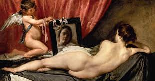
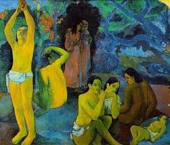
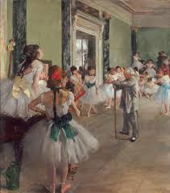
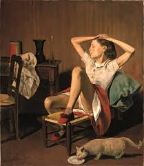

La violencia contra la mujer en la pintura
Durante siglos, el arte pictórico ha tenido el poder de decidir qué merece ser visto y cómo debe recordarse. Sin embargo, detrás de muchas obras consideradas clásicas, se esconde una normalización constante de la violencia simbólica hacia las mujeres.
La pintura convirtió cuerpos femeninos en objetos de contemplación, eliminando frecuentemente la identidad, la voz y la humanidad de quienes eran representadas.
La mirada masculina (Male Gaze)
Muchas de estas obras fueron creadas por hombres para el disfrute visual de otros hombres. Este fenómeno es conocido como Male Gaze, una forma de representación donde la mujer aparece como objeto pasivo de deseo.

"La Venus del espejo" (1647-1651) — Diego Velázquez
La figura femenina aparece desnuda y vulnerable, ofrecida completamente a la mirada del espectador. Aunque existe un espejo, el rostro de la mujer permanece borroso, reforzando la idea de que su identidad no importa tanto como su cuerpo.
La mujer no se contempla a sí misma; es el espectador quien la observa desde una posición privilegiada. El cuerpo femenino se convierte así en un paisaje visual destinado a ser consumido.
Exclusión histórica de las mujeres
Durante siglos, las mujeres fueron excluidas de academias de arte, talleres y estudios anatómicos. Mientras los hombres eran reconocidos como genios, muchas artistas fueron invisibilizadas o reducidas al papel de “musas”.
Numerosas obras realizadas por mujeres fueron atribuidas a hombres, y todavía hoy la representación femenina en museos importantes continúa siendo mínima.
Créditos: objetivoarte.com
Obras donde se refleja esta violencia
| Obra | Nombre | Contexto |
|---|---|---|

|
Las señoritas de Avignon (1907) | Picasso fragmenta y deshumaniza los cuerpos femeninos, utilizando máscaras inspiradas en arte africano para representar a las mujeres como figuras primitivas y amenazantes. |

|
Mujer lanzando una piedra (1931) | Picasso retrató a Olga Khokhlova de forma grotesca durante el deterioro de su matrimonio, deformando el cuerpo femenino como reflejo de resentimiento personal. |
|
 |
Paul Gauguin — ¿De dónde venimos? ¿Quiénes somos? ¿Adónde vamos? | Gauguin explotó sexualmente a niñas tahitianas bajo el contexto colonial, convirtiendo sus cuerpos y vidas en inspiración artística. |
|
 |
Edgar Degas — Serie de las Bailarinas | Detrás de la aparente delicadeza de las escenas, existía un entorno de explotación donde jóvenes bailarinas pobres eran sexualizadas y controladas por hombres poderosos. |
|
 |
Balthus — Thérèse Dreaming (1938) | La obra ha sido criticada por sexualizar a menores de edad, mostrando cómo ciertas formas de violencia simbólica fueron normalizadas en el arte. |
¿Puede el arte ser neutral?
Las obras de artistas como Picasso, Gauguin o Velázquez son técnicamente brillantes, pero también funcionan como registros históricos de profundas desigualdades de poder.
Comprender el contexto detrás de estas pinturas permite reconocer que el arte nunca es completamente neutral: refleja quién tiene el poder de representar y quién es reducido a ser representado.
“Cuando admiramos una obra sin cuestionar la historia de la mujer detrás de ella, corremos el riesgo de prolongar su silencio.”
Conclusión
Reconocer la violencia en el arte no significa rechazar las obras clásicas, sino completar la historia que durante siglos fue contada desde una sola perspectiva.
También significa devolver humanidad a las mujeres que fueron convertidas en símbolos, y valorar las voces de artistas que utilizaron el arte para reclamar su propia narrativa.
“El arte no solo debe decorar paredes; también debe cuestionar nuestras verdades y sanar nuestras historias.”